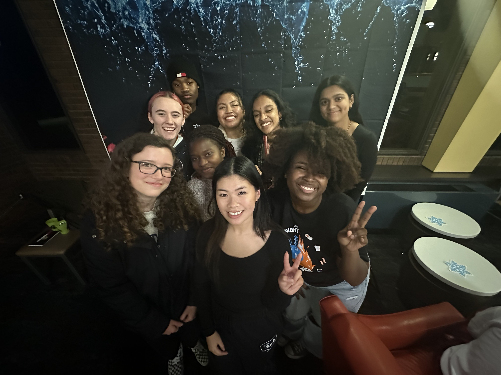
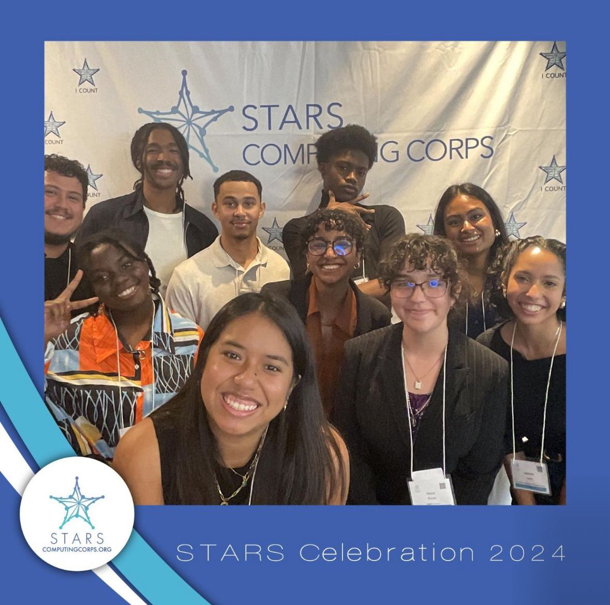
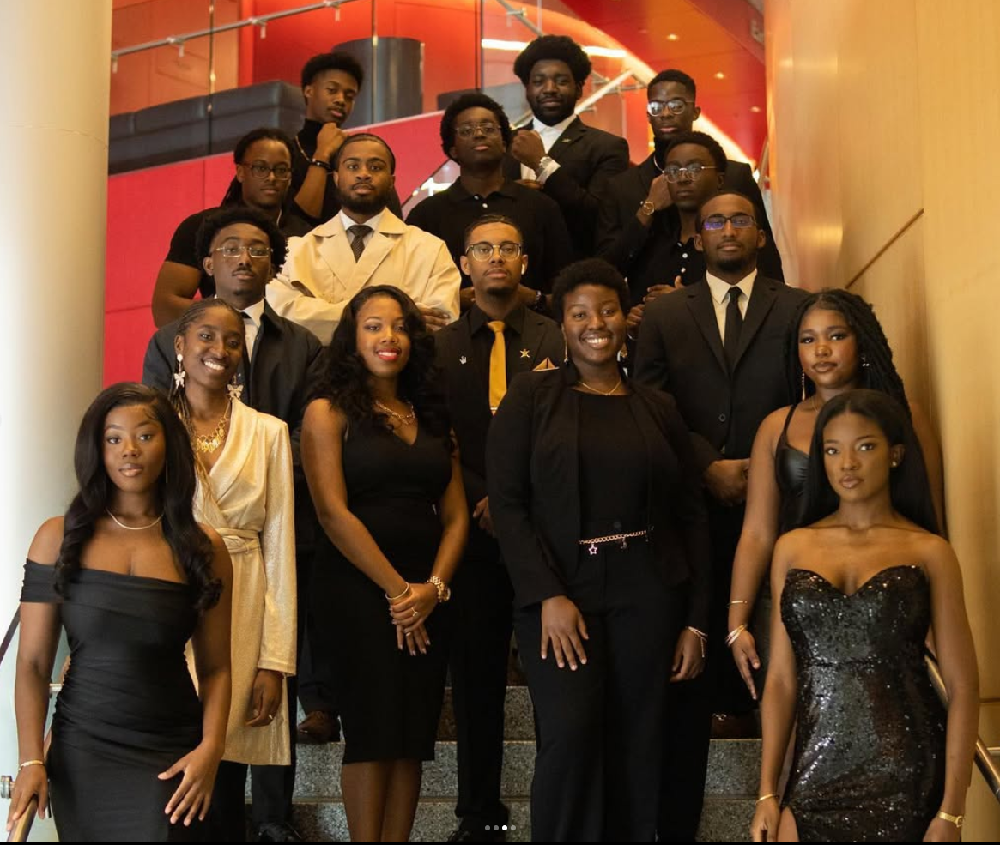
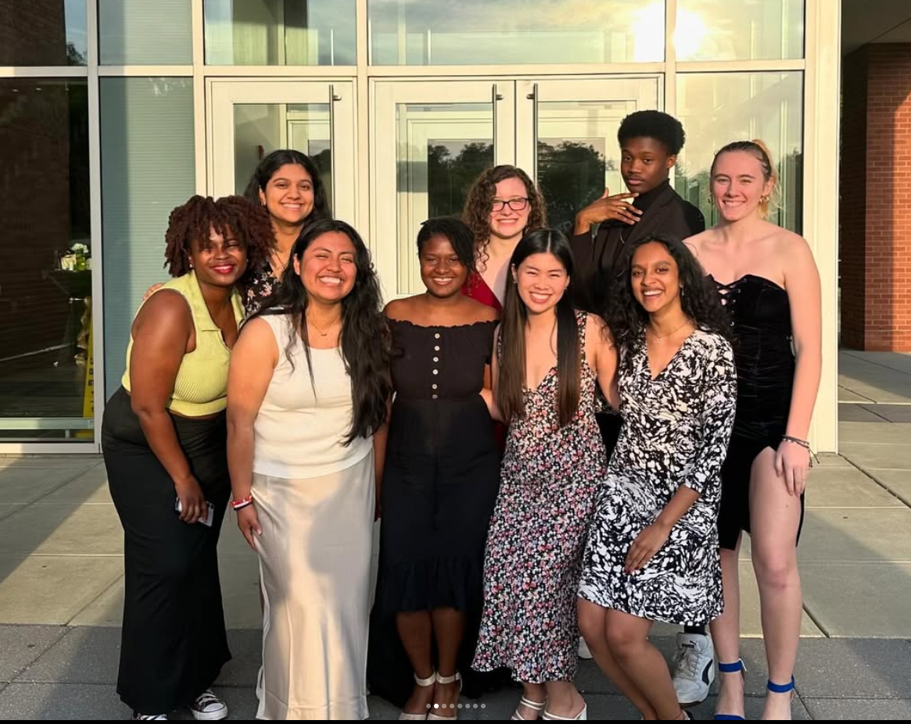

Creative Works
Church Photography

Facebook Account:
Abundant Grace Chapel International (Click here)
As a photographer for Abundant Grace Chapel International, I had the privilege of capturing key moments during church services, community programs, and special events.
My photography played a vital role in enhancing the church's social media presence, creating engaging content that resonated with both the congregation and the wider community.
Through my work, I documented baptisms, choir performances, and outreach activities, each photograph telling a story of connection and faith. These images were often used to promote events and
share uplifting messages, helping the church reach a broader audience. In addition to taking photos, I contributed to organizing the church's visual media strategy by curating galleries and
offering input on how to optimize social media posts for greater engagement. This experience not only sharpened my technical skills in photography and editing but also deepened my understanding
of the power of visual storytelling. I collaborated closely with church leaders to ensure that the content aligned with their mission and values, fostering a sense of trust and shared purpose.
Being part of this community effort taught me the importance of teamwork and communication in achieving a common goal. Overall, my role as a photographer was a meaningful way to give back to a community
that has been an integral part of my journey.
Digital Story Project

Context: The photo above is all the 2023-2024 Peer Mentors Posing at Midnight Breakfast!
This video, titled "Thank You!", was created as a heartfelt expression of gratitude to my fellow peer mentors, advisors, and the living-learning communities that have significantly
impacted my academic and personal growth. It highlights key moments and achievements, combining visuals and narration to showcase the journey that shaped who I am today. This project,
crafted for my SOCY 396 class, also serves as a tribute to the incredible work my Residential Assistant did for my floor during my freshman and sophomore years at university. To capture the video,
I used a Sony Handycam Camcorder for the phone call sequences, while all the photos were taken using my iPhone 14. I then brought everything together in Adobe Premiere Pro, where I carefully edited
the footage to align with my creative vision. This project taught me the value of storytelling through visual media and the importance of recognizing those who inspire and uplift others. I also gained
technical experience in video production and editing, which has further deepened my appreciation for multimedia projects. Ultimately, this video was not just a class assignment but a personal
expression of gratitude and a reminder of the profound impact supportive communities can have on one's journey.
Outreach
UMBC Photography Club
Instagram Account:
@umbcphotoclub(Click Here)
As an active member of the UMBC Photography Club, I capture significant campus events, contributing to the club's goal of showcasing student life and building a strong online presence. My photography not only documents moments but also helps
share stories that resonate with the UMBC community. I collaborate with other club members to plan photo shoots and engage in creative projects that promote a sense of unity. If you're interested in getting involved, feel free to
reach out through our Instagram account or attend one of our meetings to learn more about our upcoming events and activities.
STARS Computing Corps | UMBC Chapter

Instagram Account:
@starsatumbc(Click Here)
As a member of the STARS Computing Corps at UMBC, I actively contribute to initiatives that encourage underrepresented students to pursue careers in STEM fields. Our team organizes outreach programs, workshops, and
mentoring opportunities to inspire young minds and foster a supportive community. Being part of STARS has allowed me to network with like-minded peers and gain leadership experience. To become a part of our movement or to find out more,
follow us on Instagram or join us at one of our events to see firsthand the impact we make.
National Society of Black Engineers (NSBE) | UMBC Chapter

Instagram Account:
@nsbe_umbc(Click Here)
In my role as the past Membership Chair for the National Society of Black Engineers (NSBE), I worked diligently to cultivate an inclusive and welcoming environment for Black engineers and STEM students at UMBC. NSBE offers a variety of events, workshops,
and networking sessions that empower members and build professional skills. I also collaborated with other organizations to increase awareness and participation in STEM-focused activities. Our initiatives foster a supportive space where members can
share experiences and grow together. To stay updated on future events and opportunities, follow us on Instagram or attend one of our general body meetings.
Shriver Center

Instagram Account:
@shriver_umbc(Click Here)
As a peer mentor in the Shriver Living-Learning Community, I guided students in their civic engagement and service-learning activities, helping them discover their passion for community involvement.
The Shriver Center plays an essential role in connecting students with service opportunities that promote social change and personal growth. Through my mentorship, I aimed to empower students to take initiative and contribute meaningfully to the community.
It was rewarding to witness students develop their skills and confidence as they engaged in various projects. The Shriver Center's UMBC account serves as a platform to promote their mission and activities, reaching both on-campus and off-campus audiences.
By sharing updates, stories, and event highlights, the account encourages students and community members to get involved and take advantage of the opportunities available.
To learn more about upcoming activities or how to get involved, visit our Instagram or reach out directly to the Shriver Center for more information.